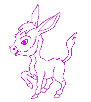
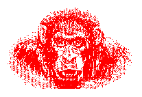

La sécurité informatique est comparable à la santé : on ne s'en inquiète que lorsqu'elle nous fait défaut. L'IDRIS, centre des ressources informatiques du CNRS au service des équipes des Unités de recherche tributaires de l'informatique extrême, a pris la décision, dès sa création, de faire face aux enjeux critiques liés à la sécurité informatique en nommant un RSSI (Responsable de la Sécurité des Systèmes d'Information) : Lionel Maurice. Ce dernier étudie en permanence les multiples aspects de cette problématique complexe et coordonne les différentes actions qui en sont issues.
L'IDRIS doit relever le défi de la mise en place de mécanismes de sécurité informatique de haute performance en préservant sa grande ouverture sur l'ensemble de la communauté scientifique et industrielle. Avec plus de 150 laboratoires, l'IDRIS a conscience de son obligation de responsabilité, de solidarité et de réalisme vis à vis de ses utilisateurs. Solidarité, pour les appliquer à la lettre à tout instant sans s'autoriser des écarts perÁus comme innocents. Réalisme, pour admettre que certaines contraintes puissent apparaître arbitraires et gênantes dans les activités de recherche, quoique salutaires à la communauté.
Dans un système informatique réparti sur le territoire national, la responsabilité personnelle est l'élément incontournable autour duquel se structure tout le dispositif de sécurité informatique.
Victor Alessandrini
Directeur de l'Institut du Développement et
des Ressources en Informatique Scientifique

I
Ton mot de passe tu choisiras
Le plus abscons, naturellement.
II
Périodiquement, des sauvegardes
De tes fichiers accompliras.
III
Une disquette ne laisseras
Dans ta machine en l'éteignant.
IV
Ton code d'accès te garderas
D'écrire en clair sous ton clavier.
V
Aucune disquette n'accepteras
Sans la tester soigneusement.
VI
L'anti-virus n'utiliseras
Si tu veux vivre dangereusement.
VII
A l'Internet ne confieras
Ni tes secrets, ni tes cancans.
VIII
Tes sauvegardes ne laisseras
Proches du PC, imprudemment.
IX
Ton clavier, tu verrouilleras
Si tu t'en vas, f°t-ce un instant.
X
Sécurité Informatique
Sur tout cela t'avisera.

|  | Faites-vous des sauvegardes? |
On appelle "média" tout support servant à faire
une copie de sauvegarde : bande Exabyte, bande DAT, disquette, disque Magnéto-optique,
etc. J'utiliserai aussi le terme de "copies" pour désigner
les sauvegardes.
Pour simplifier l'exposé, on ne parlera pas des copies dites "incrémentales".
Soit un système de copies complètes d'une machine ou d'un
serveur de fichiers à des dates t1, t2 t3, ...tn, tn+1.
 La copie qui vient après
tn+1 sera effectuée en écrasant les informations sur le média
t1. C'est le principe de rotation des médias de sauvegarde.
La copie qui vient après
tn+1 sera effectuée en écrasant les informations sur le média
t1. C'est le principe de rotation des médias de sauvegarde.
Comment choisir l'intervalle de temps entre les copies ? L'intervalle maximal
s'écoulant entre deux sauvegardes successives (tn+1 - tn) est choisi
en fonction de la vitesse d'évolution du travail, selon la quantité
d'information que l'on accepte de perdre entre deux copies. Selon les services,
ce peut être le mois, la semaine, la journée.
L'intervalle minimal s'écoulant entre deux sauvegardes successives
(tn+1 - tn) est choisi en fonction des ressources raisonnables à
mobiliser pour faire des sauvegardes : temps passé, usure du matériel,
charge CPU et pertes de débit des entrées/sorties sur les
machines dont se servent les utilisateurs. Dans le cas de copies nocturnes
automatiques, ces critères ont peu d'importance. Pour les gros serveurs
de fichiers, ce peut être le "temps zéro"; on utilisera
alors des technologies permettant une redondance de l'information : disques
miroir, matrice de disques RAID... Mais ce cas limite ne nous concerne pas
ici.
Combien d'étapes choisir dans la rotation des copies, c'est-à-dire combien conserver de copies simultanées ? Le chiffre tn+1 sera choisi en fonction de la durée de vie des informations. Dès que l'on réécrit sur le jeu de médias t1, on coupe les ponts avec le passé. Tout dépend du métier exercé. Attention, toute l'information de l'entreprise n'a pas la même durée de vie !
Il est bien connu que le feu, le vol, "ça n'arrive qu'aux
autres" ! Réfléchissez seulement : si demain vous arriviez
au travail et qu'un voleur ait pris votre ordinateur de bureau. Bon ! La
déclaration faite à la police et à l'assurance, vous
iriez travailler sur la machine d'un collègue en attendant... Pas
du tout ! Où sont vos fichiers ? Le voleur s'est aussi servi en fournitures
dans les sauvegardes !
Le raisonnement est le même pour le feu.
Alors faut-il acheter un coffre-fort ? Non, il existe un moyen tout simple.
Sortez de temps en temps du lot de rotation des copies un média (ou
un jeu de médias) et placez-le(s) dans un endroit suffisamment éloigné
de l'armoire où vous ranger les sauvegardes, par exemple à
domicile ou bien dans un autre bâtiment. Il existe une chance infime
que le feu ou les voleurs s'en prennent simultanément à ces
deux lieux. La "Copie Feu" se fait tous les six mois à
un an, et se conserve au moins dix ans.
La "Copie feu" a aussi bien d'autres avantages. Par exemple, vous
vous rendez compte au bout de six mois que les fichiers de telle application
peu utilisée sont infestés de virus. Hélas, vous avez
déjà effectué une rotation complète sur les
copies, donc voilà six mois que vous sauvegardez des fichiers invalides
sans le savoir. Le cas peut se produire également pour un dérouleur
partiellement en panne d'écriture (dans le cas d'une sauvegarde sans
comparaison à l'original), ou pour une procédure automatisée
fonctionnant incomplètement à votre insu.
La "Copie Feu", par son caractère définitif, constitue
un parachute évitant la perte totale de l'information.
Il faut étiqueter soigneusement les médias avant de les
introduire dans le lecteur/enregistreur; puis glisser le taquet de protection
d'écriture immédiatement dès la sortie du média.
Dans le cas o la sauvegarde ne tient pas sur un seul média (copies
dites "multivolumes"), il est bon de vérifier si le logiciel
utilisé pour les sauvegardes est capable d'éviter de réécrire
sur un média déjà utilisé. Pour cela, il suffit
tout simplement de faire le test en réintroduisant une seconde fois
le même média. Pour pouvoir faire face à une panne sournoise
du lecteur/enregistreur, il faut changer de temps en temps d'appareil. Par
exemple, faire une copie sur bande, si on fait les sauvegardes habituellement
sur support magnéto-optique.
Il faut s'abstenir d'ajouter des fichiers à une sauvegarde existante
pour éviter les erreurs de manipulation qui pourraient écraser
des données existantes.
Il faut préférer les sauvegardes automatiques à date
fixe aux opérations manuelles répétitives. Il faut
contrÙler périodiquement la validité de ces opérations
par des restitutions de fichiers en "vraie grandeur".
Il est souhaitable d'activer l'option de contrÙle des fichiers -
si elle existe et qu'on en a le temps - par relecture du média et
comparaison aux originaux.
Si vous êtes administrateur, formez vos utilisateurs aux concepts
des sauvegardes, choisissez avec eux les fréquences, le nombres d'étapes
dans le cycle de rotation des copies. Impliquez-les dans les choix économiques
lors de l'achat de nouveaux matériels. Enfin apprenez-leur à
"ne pas avoir confiance en l'informatique" ! Incitez-les à
faire, eux aussi, des copies aux étapes importantes d'un projet.
Les informations d'un groupe de travail incombent à la responsabilité
collective, même si l'administrateur est investi d'une mission particulière
d'intégrité de l'information.
Si vous n'avez pas d'administrateur, associez-vous avec un collègue
pour effectuer à date fixe des sauvegardes réciproques de
vos systèmes. L'important, c'est de ne pas laisser les deux casquettes
d'Utilisateur et d'Administrateur sur la même tête.

|  | Chiffrer n'est pas jouer ! |
Le Larousse nous enseigne que la cryptologie est l'art de chiffrer des messages, sans faire de distinction entre les différents procédés de transmission et de chiffrement. Le Journal officiel, qui fait autorité en la matière, est, lui, plus précis et dit:
Sans doute l'ignoriez-vous, mais l'utilisation de la cryptologie n'est pas libre. Quelle que soit la méfiance que peuvent vous inspirer les moyens de communication usuels (courrier, téléphone) ou plus spécifiques (réseaux nationaux ou internationaux), voire les pigeons voyageurs, vous devez savoir que (Ibid.) :
Les dispositions de cette loi ont été complétées
en particulier par le décret 92-1358 du 28.12.92 et ses arrÍtés
d'application.
Concrètement, cela signifie que, si pour une raison justifiée
vous estimez devoir mettre en oeuvre certaines mesures de cryptologie pour
échanger quelque communication que ce soit avec n'importe quel destinataire
local, régional, national ou international, il faut en faire la demande
préalable.

 |
Ils voient des virus partout... |
Périodiquement, on voit resurgir, soit dans les news (forums) de l'Internet, soit sous la "plume" d'un innocent qui s'interroge, soit, encore, par le bouche à oreille, une information, de ce genre :
ATTENTION, VIRUS ! Le fichier GOODTIME contient un virus.
Surtout, ne le télé-chargez pas. Et, si c'est déjà fait,
ne l'imprimez pas, ne le visualisez pas. Vous risqueriez,
en effet, de contaminer tout votre ordinateur car c'est
un virus des plus malins.
Eh bien, non ! C'est faux ! On ne peut pas "attraper" un virus simplement en visionnant ou en imprimant un texte. Pas plus qu'en visionnant une image. Pour attraper un virus, il faut EXECUTER un programme, quelle que soit sa fonction, quelle que soit sa longueur, quelle que soit sa malice ! Un fichier utilisé en tant que données (ce qui est le cas d'un fichier qu'on imprime ou qu'on liste à l'écran) ne peut pas vous glisser insidieusement un virus.
Mais, sous MS-DOS, par suite d'une faille de sécurité de ce système, il peut néanmoins causer quelques dégâts. Des esprits particulièrement vicieux peuvent glisser dans un fichier texte des commandes exécutables, se déclenchant, par exemple, en listant le fichier à l'écran.
Exemple de commande : DEL *.* qui risquerait de supprimer la totalité du contenu du répertoire où vous vous trouvez. Mais MS-DOS, étant méfiant et prudent, vous demanderait l'autorisation de procéder à cet holocauste et il faudrait que vous répondiez "O" à sa question. Bien sûr, vous pourriez taper "O" par mégarde.
Plus malin, le malveillant pourrait glisser une commande DEL *.DOC,
pour laquelle le DOS ne vous demanderait rien, mais effacerait tous vos
documents ayant cette extension. (Remplacez "DOC" par l'extension
de vos fichiers les plus précieux pour juger de l'étendue
des dégâts.)
Autre forme de paranoïa, le virus JPEG. Un texte d'apparence très
sérieuse, fort bien documenté et de plus d'une page, vous
explique que Microsoft a laissé, dans une fonction du groupe INT
21h, depuis l'origine de MS-DOS, un undocumented feature qui autorise,
dans certaines conditions, l'exécution d'un programme qui serait
caché dans un fichier de données, tel un fichier d'images.
D'où le nom de ce "virus". Applaudissons, au passage, ce
virus qui aurait vécu près de quinze ans tranquille, avant
d'être détecté !
Ce canular soigneusement monté ne pèche que par un défaut : il a été lancé un 1er avril !

"Les pirates en ont rêvé : Satan
l'a fait. Ce programme anti-fraude
est disponible sur l'Internet
pour le meilleur et pour le pire."
(Libération du 31 mars 1995)
La plupart des stations de travail Unix sont maintenant connectées sur un réseau local de laboratoire, relié à l'Internet au travers d'un réseau de campus, d'un réseau régional, de RENATER... Ces stations, pour "naviguer sur le Net" avec des logiciels tels que Mosaic, sont généralement configurées pour pouvoir accéder sans restriction à toutes les machines de l'Internet. En langage TCP/IP cela se traduit par une default route. Une conséquence souvent inconnue de cette configuration est que n'importe quel poste de travail de l'Internet peut établir une communication TCP/IP avec ces stations.
Sur celles-ci, la partie serveur d'un certain nombre d'applicatifs réseau est en attente. C'est par exemple telnetd, programme qui permet à un utilisateur distant de travailler sur la station locale avec le logiciel telnet ou ftpd qui répond aux commandes d'un utilisateur distant de FTP. Sur Unix, ces serveurs se retrouvent généralement sous le contrÙle du daemon inetd qui se base sur le fichier de configuration /etc/inetd.conf pour savoir quel applicatif serveur doit être actif. Ainsi, s'il y a une ligne de commande telnetd dans inetd.conf, la station pourra accepter des connexions telnet entrantes (venant de l'Internet). Si non, il sera impossible de se connecter depuis l'extérieur sur la station avec un logiciel telnet. Sur Unix, le daemon inetd est, par défaut, actif et le fichier inetd.conf, livré avec le système d'origine, contient de nombreux applicatifs serveurs. Avec une telle configuration (ce qui est le cas de la majorité des laboratoires du CNRS), les stations locales peuvent répondre à de nombreuses sollicitations venant de l'extérieur; ce qui permet à des chercheurs en mission d'accéder à distance à leur ordinateur.
Mais il y a des risques bien réels. En effet, certaines versions de ces logiciels serveurs ont des trous de sécurité, corrigés par des patches, mais seulement lorsque ceux-ci ont été appliqués, ce qui n'est pas toujours le cas. Ces logiciels sont souvent mal configurés, par manque de compétence ou de rigueur. Ces deux vulnérabilités sont très connues. Elles sont (et resteront) très souvent exploitées par des personnes malveillantes telles que les crackers.
Pour vérifier que toutes les stations d'un réseau local ne présentent pas ces vulnérabilités, rien de tel qu'un outil automatique qui, lancé depuis une machine, teste les accès par telnet, ftp... sur toutes les machines de son réseau local pour vérifier automatiquement la version de ces logiciels serveurs et leur bonne configuration. Ceci, sans que le testeur ait besoin d'avoir un compte (login) sur les machines testées. Outil très utile pour un administrateur de stations, c'est aussi une arme très dangereuse dans les mains d'un cracker qui peut ainsi tester n'importe quel groupe de stations dans l'Internet, la vÙtre, par exemple. Il faut néanmoins que ces stations soient configurées comme indiqué précédemment, mais c'est généralement le cas. Par contre, les machines o les patches sont installés régulièrement et qui sont bien configurées ne sont pas vulnérables.
Le plus connu de ces outils est SATAN, Security Administration Tool for Analyzing Networks, diffusé sans restriction sur l'Internet depuis le 5 avril. A la suite d'une large diffusion de recommandations aux administrateurs de systèmes; mais aussi au peu de tests que fait SATAN (il pourrait être énormément plus dangereux), il n'y a pas eu de catastrophe. Néanmoins, il a été visiblement utilisé (et continuera à l'être) pour pénétrer illégalement sur de nombreuses machines. Il est donc primordial que chaque administrateur de machine et de réseau prenne certaines précautions pour se protéger contre ce type d'outil. Voici quelques conseils :
Le logiciel SATAN ainsi que des informations le concernant, sont disponibles par FTP anonyme dans le répertoire pub/securite/Reseaux/SATAN sur le serveur ftp.urec.fr.
 Au revoir ....
Au revoir ....